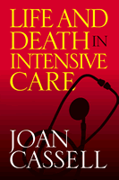

<body bgcolor="#FFFFFF" text="#000000" link="#0000FF" vlink="#CC0000" alink="#CC0000"><center><hr width="350" size="1" align="center" noshade>A penetrating look at the values, systems, and life-and-death dramas in the world of the surgical intensive care unit<hr width="350" size="1" align="center" noshade><p><a href="https://cdcshoppingcart.uchicago.edu/Cart/ChicagoBook.aspx?ISBN=9781592133352&&PRESS=temple" target="_top">Buy this book!</a> | <a href="https://cdcshoppingcart.uchicago.edu/Cart/Cart.aspx?PRESS=temple" target="_top">View Cart</a> | <a href="https://cdcshoppingcart.uchicago.edu/Cart/Cart.aspx?PRESS=temple" target="_top">Check Out</a></p><p></p></center><!--none//--><h1>Life and Death in Intensive Care</h1>
<h3>Joan Cassell</h3>
<P>cloth 1-59213-335-5 $75.50, Mar 05, <FONT COLOR=#990033>Available</FONT>
<br>paper 1-59213-336-3 $29.95, Mar 05, <FONT COLOR=#990033>Available</FONT>
<br>Electronic Book 1-59213-337-1 $29.95 <FONT COLOR=#990033>Available</FONT>
<BR> 248 pp
6x9
</P><BLOCKQUOTE><I>"</i>Life and Death in Intensive Care<i> is a valuable addition to our growing understanding of our technology- and bureaucracy-intensive hospital system. Joan Cassell is an advocate as well as comparative ethnographer, and her work will appeal to anyone concerned with health policy or the social world of modern medicine generally."</i>
<br>&#151<b>Charles E. Rosenberg</b>, Harvard University<i></I></BLOCKQUOTE>
<p><i>Life and Death in Intensive Care</i> offers a unique portrait of the surgical intensive care unit (SICU), the place in medical centers and hospitals where patients with the gravest medical conditions&#151from comas to terminal illness&#151are treated. Author Joan Cassell employs the concept of "moral economies" to explain the dilemmas that patients, families, and medical staff confront in treatment. Drawing upon her fieldwork conducted in both the United States and New Zealand, Cassell compares the moral outlooks and underlying principles of SICU nurses, residents, intensivists, and surgeons. Using real life examples, <i>Life and Death in Intensive Care</i> clearly presents the logic and values behind the SICU as well as the personalities, procedures, and pressures that characterize every case. Ultimately, Cassell demonstrates the differing systems of values, and the way cultural definitions of medical treatment inform how we treat the critically ill.
<BR>&nbsp;<h2>Excerpt</h2><P>Excerpt available at <a href="http://www.temple.edu/tempress">www.temple.edu/tempress</a></p>
<BR>&nbsp;<h2>Reviews</h2>
<p><i>"This is some book.... It is powerful writing, with harsh (accurate) content. There are great quotes, terrific anecdotes, fiery feminism and damning observations of doctors' arrogance in dealing with family, other medical specialties, and nurses."</i>
<br>&#151<b><i>Critical Care and Resuscitation</i></b>
<p><i>"Cassell's ethnographic description is lively and engaging... For the psychologist who has recently entered the medical setting, Cassell's book will be an entertaining and enjoyable educational source."</i>
<br>&#151<b>PsycCRITIQUES</b>
<p><i>"</i>Life and Death in Intensive Care<i> is an effective, important examination of the way in which institutions teach consistent but unspoken value systems through their policies, priorities, and practices, as well as a powerful call for reform. Cassell effectively integrates perspectives from anthropology and medical sociology to ensure that her final point is driven home."</i>
<br>&#151;<b><i>Ethos</i></b>
<p><i>"Cassell’s book deserves a wide audience both in and beyond medical sociology.</i>Life and Death<i> is an extremely valuable contribution to those interested in the daunting question of differing cultural and ethical values surrounding end-of-life choices and, as such, it is part of a recent trend in medical sociology that shows the influence of culture on the organization and delivery of health care. The book is made even more compelling by the fact that it shows cultural difference within the Western Anglo-Saxon tradition itself, differences often overlooked by medical sociologists in search of the exotic."</i>
<br>&#151<b><i>The American Journal of Sociology</i></b>
<BR>&nbsp;<h2>Contents</h2><P>
<p>Introduction &#150 Moonscape: The Surgical Intensive Care Unit
<br>1. A Caring Ethic: Nurses and the Dilemma of Powerlessness
<br>2. The Best of Times, the Worst of Times: The Residents
<br>3. Diverse Universes of Medical Discourse: The Fellows
<br>4. The Attendings
<br>5. Is Death the Enemy, or Suffering?
<br>6. Confronting Death in the Surgical Intensive Care Unit
<br>7. Intensive Caring in New Zealand
<br>8. Going Gentle into that Good Night: Death in Auckland
<br>9. Focusing on the Bottom Line
<br>10. The Dominion of Death
<br>Appendix &#150 "Hard" Science, "Soft" Science, Social Science:
<br>The Anxiety of Methods
<br>Notes
<br>References
<br>Index
</P><BR>&nbsp;<H2>About the Author(s)</H2>
<table><tr><td valign="top"><img src="/tempress/authors/1777_au.gif" height="90" width="75"></td><td width="100%" valign="middle"><p><b>Joan Cassell</b> is a Research Associate in the Department of Surgery at the Washington University School of Medicine. She is the author of <I><A HREF="806_reg.html" TARGET="_top">Expected Miracles: Surgeons at Work</A></I> (Temple), <I><A HREF="492_reg.html" TARGET="_top">Children in the Field: Anthropological Experiences</A></I> (Temple), and, most recently, <i>The Woman in the Surgeon's Body</i>.</P></td></tr></table>
<BR><H2>Subject Categories</H2>
<p><A HREF="/tempress/health.html" TARGET="_top">Health and Health Policy</a>
<BR><A HREF="/tempress/sociology.html" TARGET="_top">Sociology</a>
<BR><A HREF="/tempress/science.html" TARGET="_top">Science</a>
</p>
<p align="center"><a href="https://cdcshoppingcart.uchicago.edu/Cart/ChicagoBook.aspx?ISBN=9781592133352&&PRESS=temple" target="_top">Buy this book!</a> | <a href="https://cdcshoppingcart.uchicago.edu/Cart/Cart.aspx?PRESS=temple" target="_top">View Cart</a> | <a href="https://cdcshoppingcart.uchicago.edu/Cart/Cart.aspx?PRESS=temple" target="_top">Check Out</a></p><p><font face="Arial" size="1"><a href="copyright.html" onMouseOver="window.status='Web Copyright Policy';return true;" onMouseOut="window.status=''" title="Web Copyright Policy">&copy;</a> 2015 <a href="http://www.temple.edu" target="new" onMouseOver="window.status='Link to Temple University home page';return true;" onMouseOut="window.status=''" title="Link to Temple University home page">Temple University</a>. All Rights Reserved. http://www.temple.edu/tempress/titles/1777_reg.html</font></p>